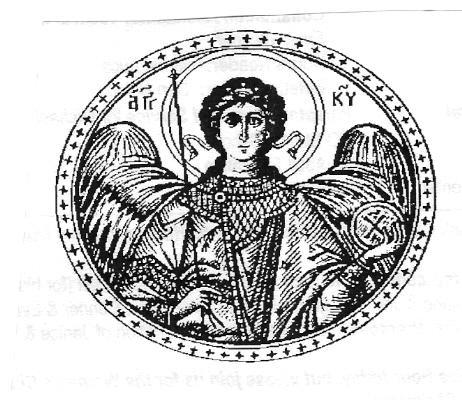

Those who suffer from various infirmities pray to him for help.
On May 6th (April 23rd by the old calendar) we commemorate one of the greatest saints of the Christian Church — the Great Martyr Saint George.
A pious native of Cappadocia, he was a distinguished military commander and a close associate of Diocletian. At the height of the persecution George distributed all his possessions to the poor, granted freedom to his slaves, laid aside his high offices, and fearlessly came forward to defend the holy faith at the council at which the emperor and his princes were deliberating the killing of innocent Christians. After cruel torments he was beheaded with the sword in the year 303.
St. George served in the Roman army of Emperor Diocletian (284-305 A.D.), and for his bravery in battle the Emperor awarded him great honors and a high military rank. However, when Diocletian embarked upon a harsh persecution of Christians, St. George, who had been raised a Christian from childhood, bravely stood before the Emperor and confessed his faith in the Lord Jesus Christ. The Emperor ordered St. George to be extensively and severely tortured, which the soldier of Christ bore with his usual courage and humble prayer to God.
For this the Lord healed his wounds, so that after every torture the saint again appeared whole and sound. This and other miracles caused many people to believe in Christ. When even the Emperor's wife, Queen Alexandra, confessed her belief in Christ, Diocletian ordered St. George to be beheaded.
While the Great Martyr was confined in prison, after the miracle of the raising of the dead which he had worked, the sick came to him, and he healed them by the name of God and by the sign of the Cross. Through the prayers of the saint the Lord not only guards soldiers on the field of battle, but also heals those who are ill.
Prayer
O holy, glorious and all-praised Great Martyr of Christ, George!
We thy people, gathered together in thy temple and bowing down before thine icon, entreat thee, the sure intercessor for that which we desire: pray with us and for us unto God, who is entreated by His own loving-kindness, that He may mercifully hear us who beseech His goodness, and may not leave unfulfilled any of our petitions needful for salvation and for this life; that by the grace given unto thee He may strengthen the Orthodox army in battle, and may cast down the might of our enemies who rise up against us, that they may be shamed and put to confusion, and that their boldness may be broken, and that they may know that we have divine help; and unto all that are in sorrow and affliction show forth thy mighty protection.
Entreat the Lord God, the Creator of all creation, to deliver us from eternal torment, that we may ever glorify the Father and the Son and the Holy Spirit, and confess thine intercession, now and ever and unto the ages of ages. Amen.